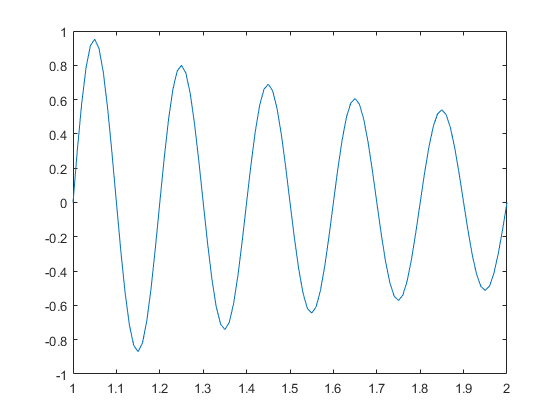
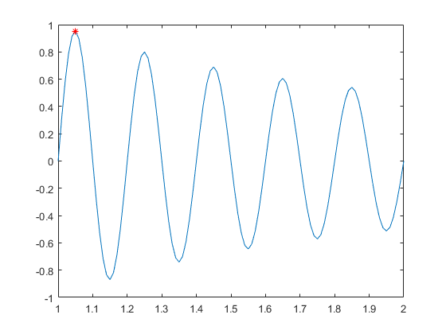
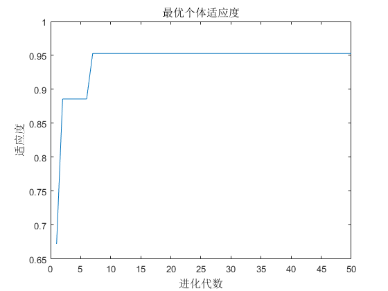

Contents
I. 清空环境
clc
clear all
close all
II. 绘制目标函数曲线图
x = 1:0.01:2;
y = sin(10*pi*x) ./ x;
figure
plot(x, y)
hold on

III. 参数初始化
c1 = 1.49445;
c2 = 1.49445;
ws = 0.9;
we = 0.4;
maxgen = 50;
sizepop = 10;
Vmax = 0.5;
Vmin = -0.5;
popmax = 2;
popmin = 1;
IV. 产生初始粒子和速度
for i = 1:sizepop
pop(i,:) = (rands(1) + 1) / 2 + 1;
V(i,:) = 0.5 * rands(1);
fitness(i) = fun(pop(i,:));
end
V. 个体极值和群体极值
[bestfitness bestindex] = max(fitness);
zbest = pop(bestindex,:);
gbest = pop;
fitnessgbest = fitness;
fitnesszbest = bestfitness;
VI. 迭代寻优
for i = 1:maxgen
w = ws - (ws-we)*(i/maxgen);
for j = 1:sizepop
V(j,:) = w*V(j,:) + c1*rand*(gbest(j,:) - pop(j,:)) + c2*rand*(zbest - pop(j,:));
V(j,find(V(j,:)>Vmax)) = Vmax;
V(j,find(V(j,:)<Vmin)) = Vmin;
pop(j,:) = pop(j,:) + V(j,:);
pop(j,find(pop(j,:)>popmax)) = popmax;
pop(j,find(pop(j,:)<popmin)) = popmin;
fitness(j) = fun(pop(j,:));
end
for j = 1:sizepop
if fitness(j) > fitnessgbest(j)
gbest(j,:) = pop(j,:);
fitnessgbest(j) = fitness(j);
end
if fitness(j) > fitnesszbest
zbest = pop(j,:);
fitnesszbest = fitness(j);
end
end
yy(i) = fitnesszbest;
end
VII. 输出结果并绘图
[fitnesszbest zbest]
plot(zbest, fitnesszbest,'r*')
figure
plot(yy)
title('最优个体适应度','fontsize',12);
xlabel('进化代数','fontsize',12);ylabel('适应度','fontsize',12);
ans =
0.9528 1.0490
 